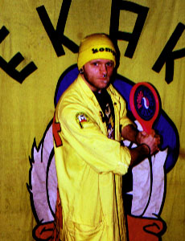

Kung LouieOskar Modig | EKAK:s filmchef här. Det är jag som håller i ordning på Kallefilmerna, lagar domnär dom går sönder och tröstar dom när dom är sorgsna.Jag ser även till att EKAK:s filmsamling växer och frodas genom att köpa in flerfina kallefilmer. EKAK:s Zoo är också min uppgift att hålla efter, så attfiskarna mår bra och inte dricker för mycket.Privat heter jag Oskar Modig, ett namn med anor... | | Kung Louie kommer från filmen Djungelboken som de flesta säkert känner igenHan är kung i djungeln, men lite missnöjd med sin position.För att råda bot pådetta så bevärdigar han Mowgli en visit för att lära sig göra upp eld.Kung louie är hårig och gillar att festa, precis som jag. |
|